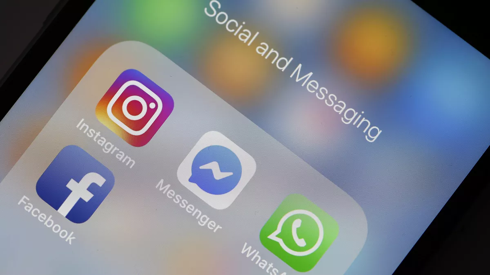

Korisniće dobrodošao na stranicu! :)Na ovoj stranici ćete moći pronaći razne podatke i informacije o meni. |
|

|
|---|
|
Novosti |
|---|
|
|
|  |
|
Pad Facebookovih platformi
Pad Facebooka, Instagrama i Whats Appa.
Što se u ustvari dogodilo? Facebook je bio srušen nešto više od 6 sati 4. listopada 2021.
i gubio je 2,500 $ po sekundi. No zašto? Facebook je objavio da razlog zbog
kojih njihovi serveri nisu radili je taj što je jedan od radnika obrisao Border Gateway
Protocol (BGP) te zbog toga nije radio njihov DNS server. Teoretičari zavjera tvrde kako
se gašenje poslužitelja namjerno dogodilo zbog optužbi o zlouporabi podataka za koju je
Facebook okriven te da su to iskoristili za brisanje svih dokaza. No u to mi nećemo
ulaziti. Što je to DNS (Domain Name System) poslužitelj? DNS je kao telefonski imenik,
ime i prezime osobe su adresa servera, dok je telefonski broj IP adresa servera.
Velike kompanije mogu posjedovati vlastite DNS servere pa je tako i Facebook
imao svoj. Radnici u tvrtci nisu mogli bežično odkloniti grešku upravo zbog
istog razloga što nije bilo pristupa serveru te su morali fizički doći do
podatkovnog centra i popraviti server. Ovako što se rijetko dešava pogotovo
kada je u pitanja velika kompanija kao Facebook. Namjerno ili slučajno ostalo
nam je da sami prosudimo.
Uredio: Luka Vuković |
|---|